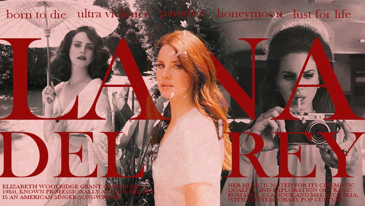

Lana Del Rey
Elizabeth Woolridge Grant es una cantautora estadounidense. Su música es conocida por su melancólica exploración del glamour y el romance.
Aquí podras enconrtar un poco de su carrera.
Albums, canciones ineditas, imagenes, etc.
Con amor para Lana.
Paradise